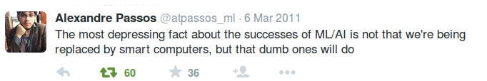
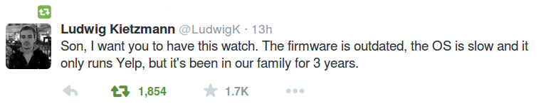

Week 16
Comment
I do not believe in a higher power because you cannot prove the presence of God is more likely than not, scientifically.
But you can
Let F be the event something appears organized, and G that there is a
creator. Goal is trying to prove the probability P(G|F) > P(~G|F); the
tilde sign means "not", the negation of the event, the | sign means
"given", i.e. P(A|B) is probability of A given B, that is, assuming B
happened, what's the likelihood of A. Using the Bayes Theorem,
P(G|F) = P(F|G)P(G) / P(F)
P(~G|F) = P(F|~G)P(~G) / P(F)
Geeks can notice the trick there; we flipped the probabilities, so we
could start from something we know. Everyone agrees P(F|G) > P(F|~G),
that is, "given" there is a creator, the probability something appears
organized is more likely, than given not. As for the rest, we must
take P(G) = P(~G) because that is apriori belief, believing something
from get-go. If P(G) is not equal to P(~G) you are a bigot.
Well, then P(F) is the same on both equations, P(G) equals to P(~G),
with all else being equal and since P(F|G) > P(F|~G), then we must
conclude P(G|F) > P(~G|F).
Boom.
Given something appears organized, a creator is more likely. Q.E.D. my brotha.. Whazzup!
Question
What does that say about intelligent design?
Nothing
The fact that there is a creator says nothing about how the designer designs. I write a genetic algorithm that can modifies itself, it goes after a problem, after many changes it is done, and its final form is different from the thing I created in the beginning. I wrote the code so it could evolve, but did nothing afterwards.
And, looking at the poor form we have right now as humans, it is pretty unlikely that we are designed as we are now. The final form of the design is pretty stupid and still a work in progress. Evolution is real.
Question
But some scientists argue there is no God, i.e. Richard Dawkins, and Stephen Hawking.
Yeah but..
Hawking says a lot of things, alien invasion [1], AI gone wild, all that.. But in general some of the backlash in scientific circles has to do with the resentment of actions taken by the Catholic Church throughout its sorry history and its Catholic God which might have pushed people to go P(~G) > P(G). CC tried to "define" exactly how the designer designs, and it failed. Thank God.
In the same vain, I also accept there is also a form of courage in the way atheists say "I don't know for sure, and I will remain in this non-knowing state until I do know for sure". This can be commendable. We've only shown the probability is higher for one case than not, noone can show existence of God anything with probability 1 (100% confidence).
Question
But didn't Kant show, logically, both presence and non-presence of God can be proven? And since he is a luminary..
Forget the luminaries
These "luminaries" did not know math the way we do now. We are in better shape than they are.
Question
What is the purpose of religion then?
Organized religion is mostly a hoax
But the prophets were onto something..
All enlightened religion exists / started out to remind humanity of its forager instincts.
When we switched to farming, villagers fell into bad habits. We domesticated plants, but they also domesticated us - see Sapient, and Why the West Rules by Morris. The village became a Disneyland - shut-in, isolated, full of gossiping neighbors, imaginery make-belief totems, where ppl survived even thrived, but also started sacrificing humans for better harvest. Inheritance, of land (because you would farm on it) became important, ppl would literally worship the bones of their ancestors.
Religion is nothing but a few smart people saying "dont worship some bones you dumb fuck". All the rest is add-ons. Fasting replicates the day of a hunter-gatherer. He wakes up, eats strong breakfast, hunts, feasts at the end of the day. Notice how alert you get when you are hungry. Your eye sight gets better. You hear clearer. It is good to connect with that part of us because evolution is slow and we still carry hunter-gatherer instincts.
Continuing the story, farmers became landowners, some became better at this, they obtained bigger lands, bigger families, this is the start of inequality. A forager could not become unequal even if they wanted to. So all religions bring the concept of equality back. Before religion, sheep fucking farmers grew in size, some became rulers, even emperors. The concept of empire makes only sense in an agricultural setting. Only then is there a surplus which can be taxed, and that tax can be used to raise armies. So empires are a form of mafia, they grab what they do not have. It is no coincidence Romans, Byzantium, Ottomans were formed around the lands where farming first started, and the concept of mafia is still strong in these regions.
Anti-village sentiment is embedded in Islam. Mohammed hated them. Rumi (a famous Islamic cleric) said "if you spend a day in a village you won't recover for a month". They found the statiticy of these people repugnant.
Organized farming started around Hilly Flanks (today's Syria and Iraq), followed closely by China. The backwardness of culture in these places is due to farming, not religion.
Question
What happened to Jesus?
Romans killed him
Romans were landowners, the sheep loving village-taxers of their day. Jesus, the free-wheeling forager spirited poor carpenter who befriended all sorts of wild characters did not play ball. He was killed. "He had no father" is a sales pitch to battle against the ancestor-bone-worshipping villagers.
So Romans (Italians), the goat lover mafiosi rulers, killed Jesus (see Gospel of Thomas for Jesus' true teachings). Then a whole religion started in his name, they tried to co-opt the religion. The biggest sales gimmick, propaganda in history is Romans then the Catholic Church which is their cultural descendant turning Jesus into a patriarchal figure suitable for bone worshipping - this is today's so called "convervatives", and blaming Jews for his death.
The dance they had to make to pull that off is one of the most hysterical one in history - they killed Jesus, and they said "he didn't actually die" (because if he did, it would then be their fault). Then they said he died but Jews killed him anyway, so it's not their fault but the Jews' (turning an entire ethnicity of peoples into Godkillers, which would work to their detriment many years later in Germany). But then they also said he didn't actually die, he couldn't really die, because he was son of God (they turned around that fatherless thing and exploited it), through this step they could turn Jesus into a patriarchal figure and now 100% ready for bone-worshipping, something peasants could deify. Catholic Church swooped right in, providing the official interface to this deity, which could be outsourced to the proper Roman ceasar if he paid the right price. Fascinating eh?
Question
But your blog is about the 3rd Wave.. What wave is this about?
Sadly this is pre-wave
When I started this blog I thought I'd be banging all day about the transition between second and third waves. I thought I'd have such an easy time riding on Toffler's analysis, just refer to random pages in his book and I'd be done. I found out there are still huge issues around 1st wave (farming) and what came before it, I guess "zeroth wave", so here I am talking about farmers and foragers. I am quite shocked by this development.
Question
But dealing with inequality etc sounds like the bailiwick of the left.
Yes
Some say "the West invented no religion, the Middle East invented no political ideology". This sounds like a smart little comment until you realize religion is politics of the ancient times. The moment you say "I demand equality", "I do not worship some fucking bones / elders", you are engaged in politics. The fact that message was carried by the left in the West, Moses / Jesus / Mohammed in the East really makes no difference.
Question
But isn't the Roman / Han Empire (China) mystical?
No
These people are descendants of hemmed-in, static, non-sea-fearing cultures. Both are deeply wedded to the region they sprung from and did not turn into explorers, so they eventually stagnated and collapsed. Their culture is truly backward (except their cuisines, sitting on your ass for thousands of years will do that to you), and inward looking, gossipy. The "closeness" and "warmness" you feel in these lands is nothing but a habit formed for having people around you all the time, due to farming. You tend to a patch of land, you have to be around it and others near it all the time, you become "neurotic", you befriend sheep, goats int he process.. It's really a bad life. Bummer.
All religion rose up against the rulers of these people. Moses against the pharaoh (the OG -original gangsta-), Jesus against Rome, Mohammed against Mecca.
Note: There is nothing "mystical" about the pyramids, use people as slaves for 30 years, you can build a pyramid. These days we build skyscrapers in a few years which are far better.
Question
You said neurotic, but don't they call Jews in US that?
Mistake
If they want to use the "right stereotype" on the right ethnic group, they should be using the term "neurotic Italian". All the supposed neuroticism of a "stereotypical Jew" is actually Mediterranean (one of the first areas of organized farming, and mafia), so the term should stick on them. In the Italian case it is more extroverted, but it is still neurotic. Robert de Nero has been playing such a "neurotic Italian" his entire life on the big screen.
Question
Then royalty is tied to land and agriculture.
Of course
The royal family of England is known as "the landed gentry" for example. In agrarian times families grew and grew, some dominate others, and they become "royalty". They look down on others. Pay attention to Turkland, Italy - these places still have deep cultural resonance with the issue of class. Industrializing did not seem to help them - industrial modernity through its teachers, bureucrats created a new class of "royalty".
Slavery (very common in Rome) is an agricultural concept, it has nothing to do with race per se, see the American South. The only racial thing there was the white majority farmers preferred blacks because they would stand out (so could not run away) in a white society, plus Africa was on one of the trade routes for US.
Question
How similar are Romans, Byzantium, Ottomans.
One and the same
In fact some historians label them (rightfully) as Rome 1, Rome 2 and Rome 3.
Question
Why was the agrarian era the first time when rich could richer? Couldn't foragers be rich?
No
[From another Morris book, Foragers, Farmers, and Fossil Fuels] "There is an obvious reason why wealth inequality is so low among foragers: foraging usually requires people to move around constantly. This can make the accumulation of material wealth not only difficult but also rather pointless. On the one hand, dragging material possessions around the countryside makes hunting and gathering much harder; on the other, the attraction of possessions declines if you have to abandon them every few weeks. Foraging as a system of energy capture puts strict practical limits on the accumulation of wealth.
In almost all foraging societies, these practical constraints on wealth accumulation are reinforced by a strong sense that material hierarchy is morally wrong. In most societies, the value of sharing is drummed into children early on [..]
Refusing to share the good things that come your way is a forager deadly sin, every bit as bad as being an upstart. In fact, greed and upstartism seem to merge in forager thought, as [..] quoted earlier revealed when he said that a successful young hunter “comes to think of himself as a chief or a big man.” Selfish foragers come under intense pressure to give goods away, which some anthropologists call “demand sharing” or even “tolerated scrounging/theft".
I guess with the rise of the non-ownership, sharing economy fueled by new tech, this part of forager culture is coming back too.
Question
But who defines what the primary ideological divisions are?
It is ancient
First ideological division was between "landed interests" and the foragers. The latter fought through religions (Moses, Jesus, Mohammed), then through modern left, the former tries to co-opt religions (Catholicism, Ottoman Caliphate), tries to push for "law and order" (i.e. jail anyone who is not like us). Private sphere expansion, more and more property belonging to someone, is their thing. They are all about that patch of land, a fence around it, they put a goat on it, and they go to work - "what my name ??!! what's my name....?!".. Beeeeee..
BTW, the AR-15 BTW is a defensive weapon, or most see it that way, which is used conciously or subconciously to "defend their land". It is a favorite by rednecks in the south - this is no coincidence. The fact that they're used for "assault" as of late is the biggest irony here.
Morris, WTWRFN
Archaeologists often suffer from an affliction that I like to call Egypt envy. No matter where we dig or what we dig up, we always suspect we would find better things if we were digging in Egypt. So it is a relief to know that Egypt envy affects people in other walks of life too. In 1995 State Councillor Song Jian, one of China’s top scientific administrators, made an official visit to Egypt. He was not happy when archaeologists told him that its antiquities were older than China’s, so on returning to Beijing he launched the Three Dynasties Chronology Project to look into the matter. Four years and $2 million later, it announced its findings: Egypt’s antiquities really are older than China’s.
Ha Ha
What I don't get is why people would want to have "more" history because more in this context almost always means "agrarian more" which means more goatfucking in your past. Look at Egypt, don't these people suffer greatly from their repugnant past? Their culture is a piece of shit because they have too much history. Why do you want more of that? (in terms of science more knowledge is good of course, but the length of history is nothing to get excited about).
Question
Is feminism a good thing?
Depends
Empowerment needs to be compatible for today's mode of production. Patriarchy is rooted in the bossy, landowner, farmer male, than becoming a bossy landowner female is just another set of wrongs. Goatfucker HQ (with the longest agrarian history) has the proper vocabulary for it. The landowner is ağa (the boss), there is a female version of that, called hanımağa (she-boss). A lot of times "empowerment" in these lands turn into women starting to act like a hanımağa. Or as the daugter of the ağa (out of reach, asexual, be married off to an important man). Some women try to adapt such airs when they think they are being "empowered". I see parallels sometimes in West. Beware.
I don't understand why people do not start with "any sufficiently advanced (spacefaring) civilization must have developed ways of organization, collaboration that would preclude them from being opressors" - a variation of opposable thumbs hypothesis, but for aliens, instead of immediately drawing parallels to barbaric events from our past, or to our relationship to animals. I like being ready, being "loaded for bear", sure, but it seems the two sides of the "alien question" are not getting equal coverage. Military / industrial / media complex at work here perhaps?
Question
Here, u talk about prez elections, predictions. But this model is too simple!
Yes
The model is simple, but it is, in fact, deceptively simple. Let's see what the modeler did not include in his model: he did not include crime rates, the wheather, population increase, the price of oil or whether or not the presidential candidate loves his mama. What he did include however are these three variables, and these variables alone (we hear Abramovitz is also toying with another variable - polarization, which measures how much the electorate is divided along party lines, etc., but this is still one variables out of bazillion he could have included). He also did not have a seperate prediction for Reps another one or Dems, he only had one - a prediction for the incumbent party. By choosing the variables the way he did, he included his intuition about what really matters in an election in his model; up and down vote on the party in power. And the results are bang on.
Simple doesn't mean something is shoddy. Simple can be very effective.
And simple ain't easy. "Writing shorter takes longer" said the wise man, right?
Penn Jilette
It's amazing to me how many people think that voting to have the government give poor people money is compassion. Helping poor and suffering people is compassion. Voting for our government to use guns to give money to help poor and suffering people is immoral self-righteous bullying laziness. People need to be fed, medicated, educated, clothed, and sheltered, and if we're compassionate we'll help them, but you get no moral credit for forcing other people to do what you think is right. There is great joy in helping people, but no joy in doing it at gunpoint.
You are confused
I think these people live in a non-existent dreamland where they are in a small village and know John, Jane, Bob, say hi to them every morning, you know.. walk around in the town, if one is in need they help out, with a smile on their face.. Sadly this world does not exist, but help needs to reach to people who need it, somehow. Chances are we as citizens dont know Jane, dont know John, but they are in financial stress, in the meantime raise a troubled son who might just shoot our ass in a movie theater thanks to lax gun laws these rightwinger idiots also champion.
Jillette has problems presenting his ideas too; rightists do this all the time; exaggerate a policy in a way it comes across as threatening somehow. Like this Rick Scrotum.. or Santorum person, talking about legalizing gay marriage, he said once [paraphrasing] "next thing you know there'll be bestiality, bunch of weirdness, and then you're gonna marry your dog". You see what he is doing here, he jumps from one policy to something completely different, which happens to be some obnoxiously comical, bizarre act, and scares people with it (my example, above on the other hand, is completely plausible :)). Same with Jilette above; He doesn't like the policy, but instead of saying why in overall policy terms, he is like "government will use its guns on me to make me pay".
Washington Post
The poorer you are, the more things cost. More in money, time, hassle, exhaustion, menace. This is a fact of life that reality television and magazines don't often explain. So we'll explain it here. Consider this a primer on the economics of poverty.
"The poor pay more for a gallon of milk; they pay more on a capital basis for inferior housing," says Rep. Earl Blumenauer (D-Ore.). "The poor and 100 million who are struggling for the middle class actually end up paying more for transportation, for housing, for health care, for mortgages. They get steered to subprime lending. . . . The poor pay more for things middle-class America takes for granted."
Damn
ML

heirloom
